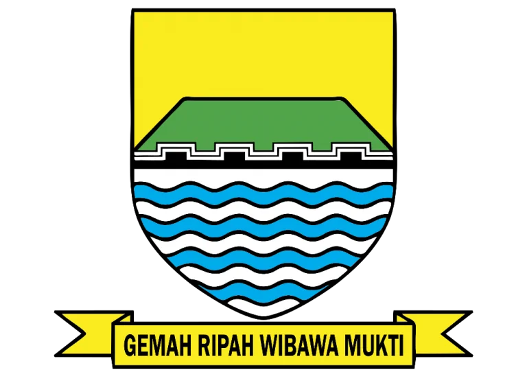

RUTILAHU WebGIS adalah bagian dari portal digital Kelurahan Kebon Lega. Sistem ini mengubah pendataan rumah tidak layak huni yang sebelumnya tersebar di lembar Excel menjadi basis data terpusat yang dapat diperbarui, diverifikasi, dipetakan, dipantau, dan dilaporkan.
Pengurus RW memasukkan usulan beserta bukti. Petugas Kelurahan memeriksa data, memberi catatan pada setiap perkembangan, mengubah status verifikasi dan penanganan, lalu dapat mengirim pemberitahuan melalui WhatsApp. Dashboard dan peta menampilkan persebaran kasus dan membantu menentukan RT/RW dengan kebutuhan paling tinggi.
| Kondisi sebelumnya | Perbaikan melalui sistem |
|---|---|
| Data Excel mudah memiliki versi ganda dan sulit dicari. | Data tersimpan pada MySQL dan dikelola melalui satu aplikasi. |
| Bukti foto dan dokumen terpisah dari baris data. | Lampiran terhubung langsung ke pengajuan terkait. |
| Persebaran rumah tidak terlihat secara geografis. | WebGIS menampilkan titik rumah dan batas operasional kelurahan. |
| Progres sulit diketahui pengusul. | Status, catatan, pelacakan, dan pesan WhatsApp mendukung transparansi. |
| Riwayat perubahan tidak terdokumentasi. | Audit trail mencatat status, petugas, waktu, dan catatan. |
Sistem ditujukan untuk mempercepat pendataan dan verifikasi, menjaga konsistensi data, mempermudah monitoring penanganan, serta memberi dasar faktual bagi penentuan prioritas program bantuan.
| Peran | Kewenangan utama | Batasan |
|---|---|---|
| Pengunjung publik | Melihat profil, berita, potensi, pemerintahan, layanan, peta agregat, panduan RUTILAHU, dan melacak pengajuan menggunakan data verifikasi. | Tidak dapat melihat NIK, identitas, bukti kepemilikan, atau dokumen internal. |
| RW | Masuk ke dashboard, mengajukan RUTILAHU, mengunggah persyaratan, serta melihat status dan catatan pengajuan miliknya. | Tidak dapat memverifikasi, menolak, mengubah penanganan, atau melihat pengajuan RW lain. |
| Super Admin Kelurahan | Mengelola akun RW, seluruh RUTILAHU, verifikasi, status, catatan, import/export Excel, konten landing page, layanan, berita, pemerintahan, kontak, dan data pendukung. | Akses administratif harus digunakan oleh petugas berwenang. |
Data pokok mencakup kode rumah, nama, NIK 16 digit, alamat, RT/RW, jumlah anggota keluarga dan lansia, status tanah, kondisi fisik, nomor kontak, serta koordinat. NIK hanya menerima angka dan dibatasi 16 karakter.
| Persyaratan | Kegunaan | Publik? |
|---|---|---|
| Foto rumah | Bukti visual kondisi bangunan. | Dapat ditampilkan sesuai pengaturan sistem. |
| Identitas/KTP | Validasi pemilik atau penghuni. | Tidak. Bersifat pribadi. |
| Surat pengantar RT/RW | Bukti pengusulan dari wilayah. | Tidak. |
| Bukti kepemilikan rumah | Validasi hubungan pengaju dengan bangunan. | Tidak. |
| Titik koordinat | Menempatkan rumah pada WebGIS dan mengecek cakupan wilayah. | Peta publik harus menghindari pemaparan identitas sensitif. |
| Kategori | Makna | Indikator umum |
|---|---|---|
| Darurat | Kerusakan berat atau berpotensi membahayakan penghuni. | Atap, dinding, lantai, atau struktur dalam kondisi berat; perlu prioritas pemeriksaan. |
| Sedang | Beberapa bagian tidak layak tetapi rumah masih dapat dihuni. | Kombinasi kerusakan sedang/ringan yang memengaruhi kelayakan. |
| Ringan | Ada kerusakan namun belum masuk kondisi berat. | Kerusakan terbatas dan belum mengancam keselamatan langsung. |
| Sudah Ditangani | Rumah telah memperoleh perbaikan. | Proses penanganan selesai dan hasil telah dicatat. |
Form juga merekam kondisi atap, dinding, lantai, dan sanitasi. Kategori membantu penyajian ringkas; keputusan resmi tetap berasal dari verifikasi petugas Kelurahan.
Kelurahan menjadi pihak yang melakukan pengecekan, menerima atau menolak, dan mengubah status. Setiap progres memiliki kolom catatan agar alasan keputusan, kekurangan dokumen, hasil survei, dan tindak lanjut dapat ditelusuri.
| Status verifikasi | Arti |
|---|---|
| Belum diverifikasi | Usulan sudah tersimpan dan menunggu pemeriksaan. |
| Terverifikasi | Data dan kondisi telah dinilai memenuhi hasil pemeriksaan. |
| Ditolak | Usulan tidak dapat dilanjutkan; alasan dicatat oleh Kelurahan. |
| No. | Status | Penggunaan |
|---|---|---|
| 1 | Belum ditangani | Belum ada tindakan atau usulan program aktif. |
| 2 | Dalam pengusulan | Data sedang diajukan ke program atau instansi terkait. |
| 3 | Dalam penanganan program bantuan | Perbaikan melalui program bantuan sedang berjalan. |
| 4 | Ditangani swadaya mandiri | Penanganan dilakukan mandiri oleh warga/lingkungan. |
| 5 | Selesai ditangani | Perbaikan selesai dan hasil akhirnya tercatat. |
Riwayat perubahan menyimpan status lama dan baru, petugas, waktu, dan catatan. Mekanisme versi data mencegah pembaruan bersamaan menimpa perubahan petugas lain.
Dari detail pengajuan, petugas dapat membuka WhatsApp dengan pesan progres yang telah terisi. Pesan dikirim ke nomor aktif pada akun RW atau nomor kontak pengajuan. Pengiriman tetap dilakukan petugas melalui WhatsApp sehingga isi dapat diperiksa terlebih dahulu.
RW melihat status pengajuannya setelah login. Pengaju juga dapat memakai fitur pelacakan publik dengan kode rumah/pengajuan dan data kontak yang sesuai. Hasil pelacakan menampilkan progres dan catatan yang layak diketahui tanpa membuka identitas sensitif.
Import Excel disediakan agar data lama tidak perlu diketik satu per satu. Format mendukung struktur verifikasi RUTILAHU yang berisi nomor, nama, NIK, alamat, anggota keluarga, lansia, status tanah, kondisi atap, lantai, dinding, dan keterangan.
.xlsx.Export menghasilkan data operasional untuk pelaporan. Dokumen identitas privat tidak disisipkan ke export publik. Hak mengunduh data lengkap hanya diberikan kepada petugas berwenang.
Layanan UMKM menggunakan mesin layanan digital umum pada portal. Warga memilih layanan, membaca persyaratan, mengisi data, mengunggah bukti, mengirim permohonan, lalu melacak statusnya.
| Dokumen | Sifat |
|---|---|
| Foto usaha atau produk | Wajib |
| Foto lokasi usaha | Wajib |
| KTP | Wajib dan privat |
| NIB | Opsional, jika ada |
| Sertifikat halal | Opsional |
Admin dapat mengatur nama layanan, deskripsi, urutan langkah, persyaratan dinamis, serta memeriksa aplikasi yang masuk. Berkas gambar/PDF dibatasi ukuran dan jenisnya sesuai validasi aplikasi.
Super Admin dapat memperbarui isi portal tanpa mengubah kode program. Pengaturan profil mencakup judul dan deskripsi hero, gambar latar bagian atas, judul serta isi sambutan, nama dan foto Lurah, latar halaman login, judul/deskripsi/gambar bagian pemerintahan, dan judul/deskripsi/gambar bagian potensi.
| Modul | Data yang dikelola |
|---|---|
| Profil Kelurahan | Identitas, deskripsi, visi/misi, sambutan, alamat, hero dan foto. |
| Pemerintahan | Daftar pejabat, jabatan, foto, urutan, dan visual latar bagian. |
| Potensi & fasilitas | Judul, deskripsi, kategori, foto, lokasi, dan visual pengantar. |
| Berita | Judul, isi, gambar, tanggal, status tayang, dan pengelolaan artikel. |
| Layanan | Informasi RUTILAHU permanen, layanan UMKM, langkah dan persyaratan layanan lain. |
| Kontak & buku tamu | Pesan warga/pengunjung dan informasi kanal Kelurahan. |
| Demografi & wilayah | Ringkasan penduduk dan pembagian administratif. |
Gambar menerima format JPG, PNG, atau WEBP dengan batas ukuran yang diterapkan backend. Tampilan menggunakan overlay dan kontras teks agar foto latar tetap terbaca.
Aplikasi memakai arsitektur client-server. React menyajikan antarmuka dan memanggil REST API Express. Backend menjalankan aturan bisnis, autentikasi, validasi, upload, import/export, dan query basis data. MySQL menyimpan data terstruktur; berkas upload ditempatkan pada penyimpanan server dengan pemisahan akses.
| Container | Fungsi | Port |
|---|---|---|
| frontend | Antarmuka React/Vite. | 5173 |
| backend | REST API Node.js/Express. | 5000 |
| database | MySQL dan volume data persisten. | 3306 internal |
| adminer | Alat administrasi database untuk operator teknis. | 8080 |
Pengunjung / RW / Super Admin
│ HTTPS + JSON / multipart form
▼
Frontend React ───── peta ───── OpenStreetMap tiles
│ /api
▼
Backend Express ─── autentikasi JWT dalam cookie httpOnly
├── MySQL (data aplikasi)
├── private uploads (identitas/dokumen)
└── public uploads (gambar yang boleh ditayangkan)
| Lapisan | Teknologi | Peran |
|---|---|---|
| Frontend | React 19, React DOM, React Router | Komponen antarmuka, state, navigasi halaman, dan dashboard berdasarkan peran. |
| Build & styling | Vite 8, Tailwind CSS 4 | Development server/build produksi dan desain responsif bertema hijau. |
| Peta | Leaflet, React Leaflet, OpenStreetMap, GeoJSON | Peta interaktif, marker, auto-focus koordinat, dan batas wilayah. |
| UI pendukung | Lucide React, Motion | Ikon dan animasi antarmuka. |
| Backend | Node.js, Express 5 | REST API, aturan akses, proses bisnis, upload dan respons data. |
| Database | MySQL 8.4, mysql2 | Penyimpanan relasional dan transaksi data. |
| Keamanan | bcryptjs, JSON Web Token, cookie-parser, CORS | Hash sandi, sesi login, cookie aman, dan pembatasan origin. |
| Dokumen | Multer, ExcelJS | Upload multipart, validasi berkas, import/export Excel. |
| Infrastruktur | Docker, Docker Compose, Adminer | Lingkungan konsisten dan pengelolaan layanan. |
| Kelompok | Tabel utama | Isi |
|---|---|---|
| Profil portal | village_profile, demographic_summary, administrative_areas | Identitas, visual landing page, demografi, dan pembagian wilayah. |
| Konten | news, facilities, potentials, government_officials | Berita, fasilitas, potensi, dan aparatur. |
| Interaksi | contacts, guestbook | Pesan kontak dan kunjungan publik. |
| Akun | admins | Super Admin/RW, kredensial ter-hash, nomor RW dan WhatsApp. |
| Layanan umum | service_types, service_requirements, service_applications, application_values, application_files, application_status_history | Definisi formulir, permohonan, jawaban, lampiran, dan riwayat. |
| RUTILAHU | rutilahu_houses, rutilahu_history | Rumah, kondisi, koordinat, dokumen, status, versi, dan audit trail. |
| ✓ | Sandi tidak disimpan sebagai teks biasa; backend menggunakan bcrypt. |
| ✓ | Sesi memakai JWT pada cookie httpOnly sehingga token tidak perlu dibaca JavaScript. |
| ✓ | Middleware peran membatasi menu dan endpoint Super Admin/RW. |
| ✓ | NIK divalidasi sebagai angka maksimal 16 digit dan dihapus dari respons publik. |
| ✓ | Identitas serta bukti kepemilikan ditempatkan sebagai dokumen privat. |
| ✓ | Upload dibatasi berdasarkan ukuran dan tipe MIME. |
| ✓ | Riwayat mencatat perubahan status dan pelakunya. |
| ✓ | Kolom versi melindungi pembaruan/hapus dari konflik data bersamaan. |
| Area | Contoh endpoint | Fungsi |
|---|---|---|
| Publik | GET /api/profile, /news, /potentials, /services | Menyediakan konten portal. |
| Peta | GET /api/map/geojson, /rutilahu/geojson | Menyediakan batas dan titik dalam GeoJSON. |
| Pelacakan | POST /api/rutilahu/track, /applications/track | Memeriksa progres dengan data verifikasi. |
| Autentikasi | POST /api/auth/login, GET /auth/me, POST /auth/logout | Membuat, memeriksa, dan mengakhiri sesi. |
| Admin RUTILAHU | /api/admin/rutilahu, /import, /export, /template | CRUD, detail, dokumen, import/export, dan status. |
| Admin portal | /api/admin/profile, /news, /officials, /services | Pengelolaan konten dan layanan. |
| Admin aplikasi | /api/admin/applications, /status, /files | Pemeriksaan permohonan umum dan lampiran. |
Nama endpoint dapat berkembang bersama versi aplikasi. Dokumentasi teknis terbaru tetap mengacu pada berkas routes di backend.
cd /home/n/web/web-desa-2 docker compose up -d --build docker compose ps docker compose logs -f backend
| Layanan | Alamat lokal |
|---|---|
| Portal/frontend | http://localhost:5173 |
| Backend/API health | http://localhost:5000/api/health |
| Adminer | http://localhost:8080 |
DB_HOST, DB_PORT, DB_NAME, DB_USER, DB_PASSWORD, JWT_SECRET, FRONTEND_URL, PORT, dan VITE_API_URL. Kredensial produksi harus berbeda dari nilai pengembangan dan tidak boleh dimasukkan ke repositori.
docker ps -a, hentikan stack lama dengan docker compose down, lalu jalankan kembali. Pastikan container berisi data penting telah dicadangkan sebelum dihapus.Pengujian harus mencakup jalur utama tiap peran, validasi gagal, hak akses, dokumen, dan respons pada layar kecil. Build frontend, lint, pemeriksaan sintaks backend, health endpoint, serta koneksi database menjadi pemeriksaan minimum sebelum rilis.
| ✓ | Skenario penerimaan |
|---|---|
| □ | Super Admin dan RW dapat login; pengguna tanpa sesi dialihkan dengan benar. |
| □ | Super Admin dapat membuat akun RW dengan nomor WhatsApp valid. |
| □ | RW dapat mengisi kode rumah, NIK angka maksimal 16 digit, persyaratan, dan koordinat. |
| □ | Peta fokus otomatis dan menandai titik; lokasi luar batas mendapat validasi. |
| □ | Kelurahan dapat memverifikasi, menolak, mengubah status, dan wajib menambahkan catatan. |
| □ | Modal detail/status/hapus berada di tengah, di atas backdrop, dan pesan error terlihat. |
| □ | Hapus data berjalan dan menangani konflik versi tanpa merusak data. |
| □ | Import template Excel menolak baris invalid dan export dapat dibuka kembali. |
| □ | Dokumen privat gagal diakses oleh publik dan RW lain. |
| □ | WhatsApp membuka nomor serta pesan progres yang benar. |
| □ | Konten landing page yang diedit tampil konsisten di desktop dan mobile. |
| □ | Permohonan UMKM menerima dokumen wajib dan mengizinkan dokumen opsional kosong. |
Pengujian pengguna sebaiknya memakai data contoh tanpa identitas asli, kemudian dilakukan uji terbatas bersama petugas Kelurahan dan perwakilan RW sebelum produksi penuh.
| Kelompok | Nilai sistem | Label pengguna |
|---|---|---|
| Verifikasi | belum_diverifikasi | Belum Diverifikasi |
terverifikasi | Terverifikasi | |
ditolak | Ditolak | |
| Penanganan | belum_ditangani | Belum Ditangani |
dalam_pengusulan | Dalam Pengusulan | |
dalam_penanganan_program_bantuan | Dalam Penanganan Program Bantuan | |
ditangani_swadaya_mandiri | Ditangani Swadaya Mandiri | |
selesai_ditangani | Selesai Ditangani |
Kelurahan Kebon Lega berada di Kecamatan Bojongloa Kidul, Kota Bandung, Provinsi Jawa Barat, kode pos 40235, dengan ketinggian sekitar 500 meter di atas permukaan laut. Referensi batas operasional pada peta: utara Cibaduyut, selatan Situsaeur, timur Babakan Ciparay, dan barat Karasak. Marker kantor mengarah ke kawasan Jl. Cibaduyut Lama RT 05/RW 06.
| Kegiatan | Penanggung jawab | Frekuensi |
|---|---|---|
| Verifikasi usulan dan catatan progres | Petugas Kelurahan | Setiap ada pengajuan/perubahan |
| Pembaruan akun RW | Super Admin | Sesuai pergantian pengurus |
| Backup database dan berkas | Operator teknis | Harian/mingguan sesuai kebijakan |
| Pemeriksaan kesehatan layanan | Operator teknis | Rutin dan setelah deployment |
| Pembaruan konten publik | Admin konten/Kelurahan | Saat informasi berubah |
| Evaluasi ketepatan data | Kelurahan dan RW | Berkala |
Dokumen ini menjelaskan implementasi aplikasi pada repositori web-desa-2 dan alur bisnis yang telah ditetapkan untuk Kelurahan Kebon Lega.